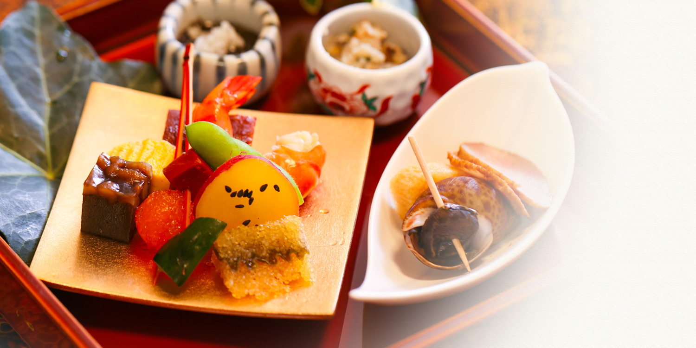

夜のお食事



Kyo-kaiseki filled with the seasonal taste of Kyoto
個室は会席Ｂより
京都の旬を満喫できる
手間暇掛けた京懐石
Recommended traditional multi-course Japanese dinner
京料理花咲
夜のお勧め会席

懐石Ｂ
11,000円（税抜）
お客様お一人様当たり
京の技を尽くした逸品揃い
満足感ある京都牛付き会席9品
先付 / 前菜8種 / 椀 / 造り3種 / 焼物 / 季節の炊合せ / 京都牛のステーキ / 海鮮寿司 / 赤出汁 / デザート
京野菜や京都ならではの食材はもちろん、京都牛ステーキもお楽しみいただけるコース。
旬の味覚と奥深さに満ちた京懐石をお楽しみください。
※上記は一例です。お料理の内容は月ごとに代わります。


Traditional multi-course Japanese dinner 夜の会席料理


Japanese hot pot / Nabe cuisine 鍋料理
Introduction of private rooms 個室のご案内
夜は懐石B以上の会席をご利用で、
個室をお使いいただけます。（税込・サービス料10%別）
接待や記念日、神社行事後のご会食などにどうぞ。
お席がうまく運びますよう、
席順のお打ち合わせやお土産の手配なども承ります。
個室が満席になる場合もございますので、
お早めのご予約をお勧めいたします。


ご予約・お問い合わせReserve & Contact
075-606-597011:30～14:00（LO）/ 17:30～22:00（LO20:00）
/ 不定休